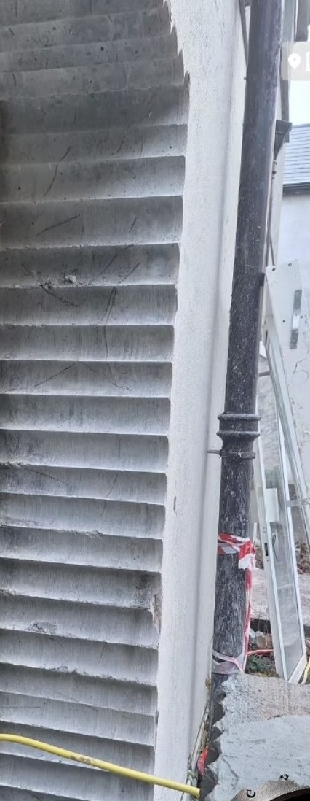
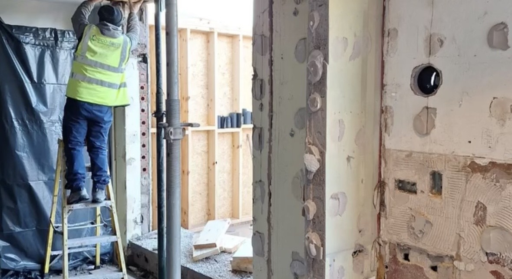
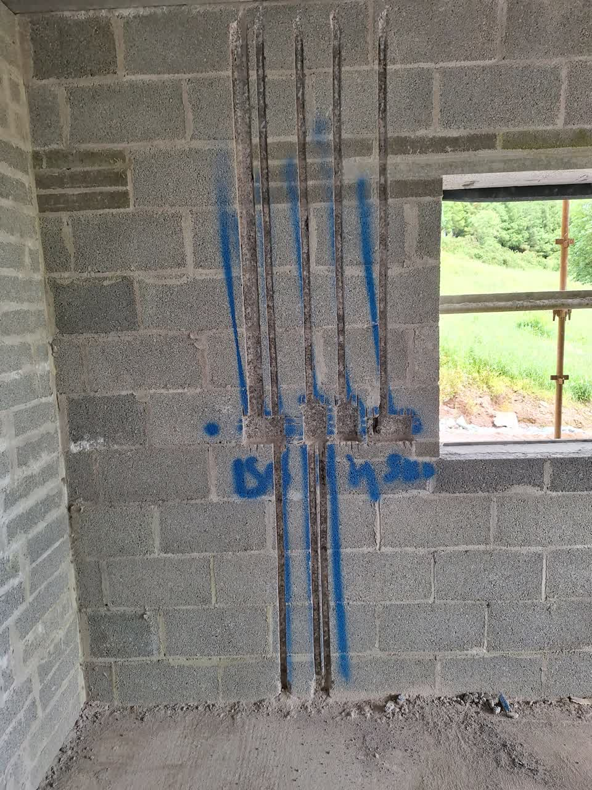
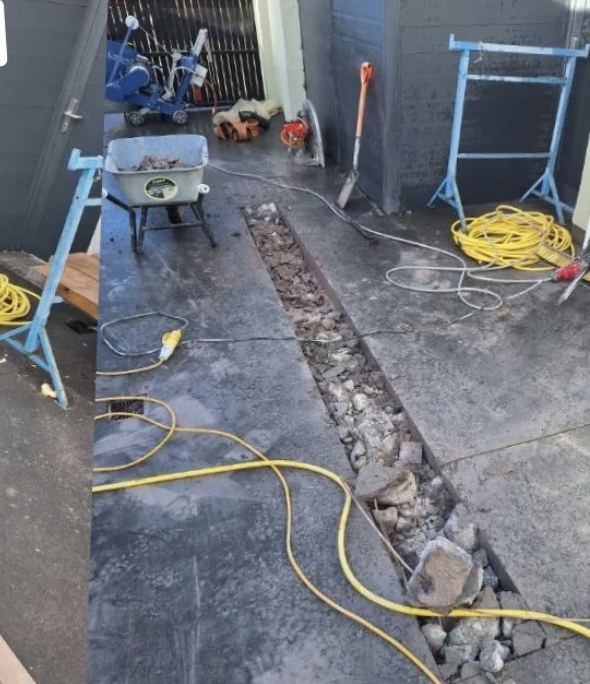
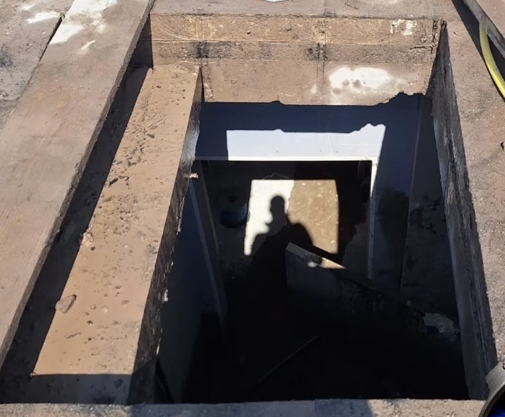

Core Drilling & Coring
Dust-free diamond core drilling for pipes, cabling, HVAC and drainage — all diameters. Stitch coring available for large structural openings.
Core Drilling & Coring service
Precision Concrete Cutting & Coring Specialists
Dust-free, water-suppressed diamond cutting for residential, commercial and civil projects. Clean cuts, tight tolerances, no mess left behind.
Specialist Services

Dust-free diamond core drilling for pipes, cabling, HVAC and drainage — all diameters. Stitch coring available for large structural openings.
Core Drilling & Coring service
Straight, clean channels cut through blockwork and concrete for electrical conduit and plumbing lines — minimal disruption to the surrounding structure.
Wall Chasing serviceStructural cuts for new door and window openings, ventilation shafts and service penetrations through reinforced concrete and brick.
Wall Sawing service
Deep, precise cutting for trenching, expansion joints, road surfaces and slab penetrations — from light residential work up to heavy commercial sites.
Floor Sawing service
Forming roof and wall openings to exact dimension — skylights, structural windows and access hatches cut cleanly in reinforced concrete and block.
Structural & Skylight Openings serviceProject Showcase
Challenge: Create a large structural opening through a load-bearing concrete wall on a live residential site with limited access.
Solution: Wall saw mounted and precisely guided along marked layout lines; dust-suppression and protective sheeting applied throughout.
Outcome: Clean opening to exact dimensions, structural integrity maintained, site left tidy for the follow-on trades.
Challenge: Form a large opening in a thick exterior stone and concrete wall where a conventional wall saw could not access the full depth.
Solution: Series of overlapping core holes drilled on a marked template using WEKA K32 drill rig, then the section removed cleanly.
Outcome: Full-depth opening achieved through difficult masonry — precise, dust-controlled, no damage to adjoining structure.
Challenge: Install two 1.4m × 1.4m skylight openings through a reinforced flat roof on a commercial building — tight tolerances, weatherproofing critical.
Solution: Husqvarna cut-and-break saw used to form exact openings; sections removed cleanly and site protected throughout.
Outcome: Two perfect openings, dimensionally accurate, installed in a single day with full site protection and clean handover to the roofing contractor.
Work In Motion
Wall chasing in action — clean channels cut through blockwork for electrical conduit. This is the standard we bring to every job: accurate, controlled, no mess.
Our Process
Common Questions
Cork City & County, Limerick, Kerry, Waterford, Tipperary and Clare — anywhere across Munster. Based in Cork.
Yes. All water, slurry and debris from cutting is cleared before we leave. Clean handover is standard, not optional.
Yes. Blitz carries full public liability insurance covering residential, commercial and civil concrete cutting work.
Professional Hilti, Husqvarna and WEKA rigs — the same equipment used by specialist contractors on major civil projects. No consumer-grade tools.
Phone and WhatsApp enquiries are typically answered the same day. For urgent commercial work, we can often mobilise next day.
Yes. Diamond cutting is specifically designed for reinforced concrete — RC slabs, walls and columns are all standard for core drilling, wall sawing and floor sawing.
From 50mm for drainage and cable penetrations up to 500mm+. Stitch coring is used to form openings of any size where a single core is insufficient.
We carry our own water supply for most jobs. If a site water source is available, please let us know — it can speed things up on larger jobs.
Service Area
Based in Cork, covering Cork City & County, Limerick, Kerry, Waterford, Tipperary and Clare.
Core drilling, wall sawing and floor sawing for Cork city and county residential and commercial projects.
Dust-free diamond core drilling for pipes, cabling and HVAC penetrations across all Munster counties.
Structural wall cuts for doors, windows and ventilation openings in Limerick city and surrounding areas.
Deep slab cutting, trenching and expansion joint work for Waterford residential and civil projects.
Precise electrical and plumbing channels cut cleanly through block and concrete across Kerry and Tipperary.
Skylight and structural opening formation in reinforced concrete and block — all of County Clare covered.
Direct Contact
Fastest response is by phone or WhatsApp. You can also email or message on Instagram.